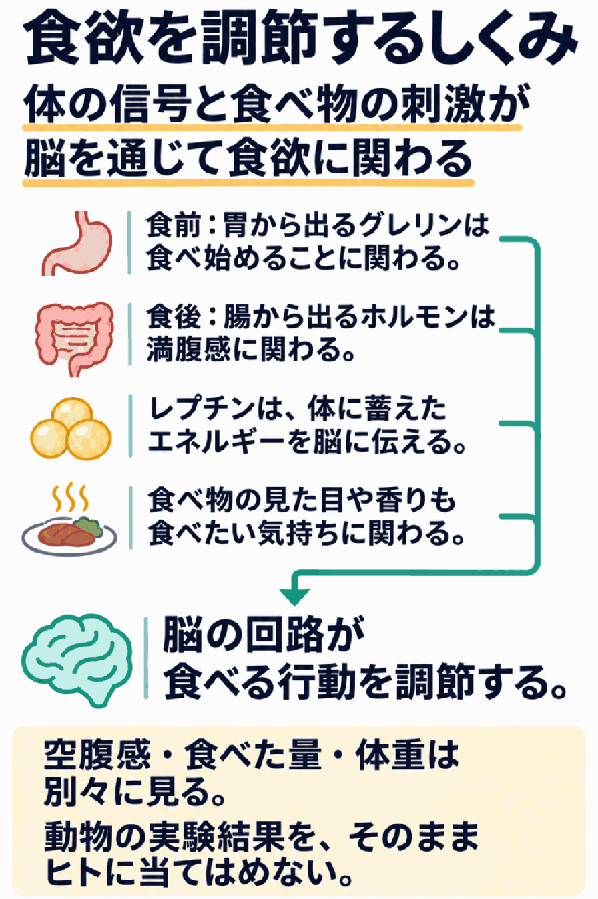

食欲を調節するしくみ
解説記事へ戻る

食前と食後のホルモン、体に蓄えたエネルギー、食べ物の見た目や香りが、脳を通じて食欲に関わります。
画像を原寸で開く
図の文章を読む（クリック／タップで開閉）
体の信号と食べ物の刺激が脳を通じて食欲に関わる。
食前の胃から出るグレリンは、食べ始めることに関わる。
食後の腸から出るホルモンは、満腹感に関わる。
レプチンは、体に蓄えたエネルギーを脳に伝える。
食べ物の見た目や香りも、食べたい気持ちに関わる。
脳の回路が食べる行動を調節する。
空腹感・食べた量・体重は別々に見る。動物の実験結果をそのままヒトに当てはめない。
店先のパンが気になることと、実際に食べた量は、別々に考えます。
画像を原寸で開く
食欲が変わった時期や、どんな場面で食事がとりにくかったかをメモにすると、診察で伝えやすくなります。
画像を原寸で開く